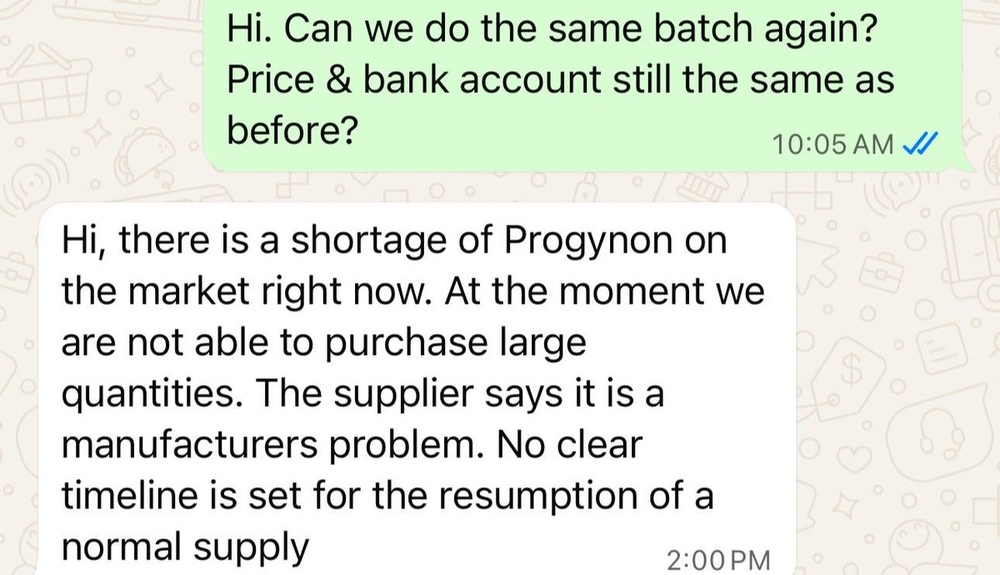

猫卷🍥
@lumigj02
悲报：日雌可能真的要G了
我问了很多日本的经销商/零售商，以及国内的代理，现在货是越来越少，日本本地都不够，价格飙升……
说是富士制药的问题，然后是否停产也未可知
但是产量肯定是少了很多很多了，也不知何时能恢复

太对了窝哥
@astykxs
还有就是日雌大概会很贵，400+了，或者我干脆不做了，因为我一直是350不到的，我觉得涨到400会接受不了还不如直接不做
我问了多个日本人那边供应商都很缺货，不然就是很贵，所以也是为什么九月份休息一个月，暂定一个月
而且泰补也断到10月份。如果到时候还没有缓解我就退休 https://t.co/L3WwgQW6hN